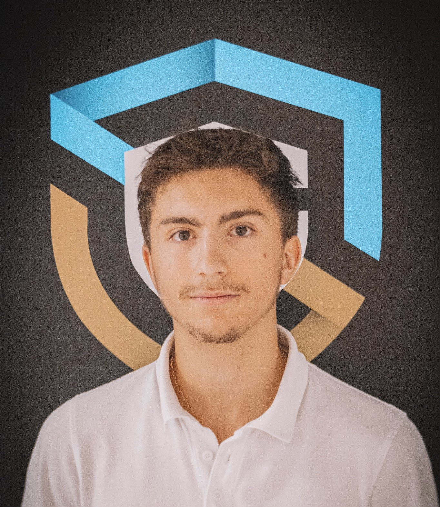
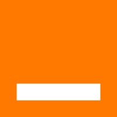
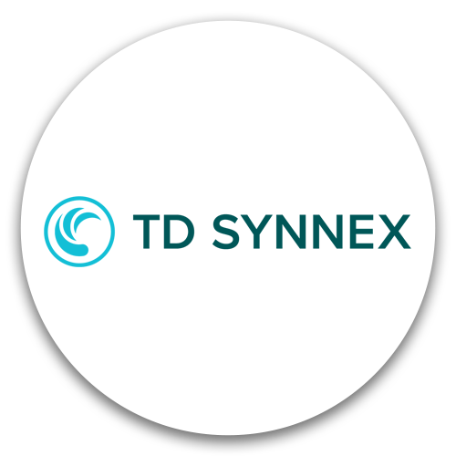

01
Projet d'école — 2026
Création et configuration réseaux/IP des VM
Déploiement d'une infrastructure réseau virtuelle sécurisée (LAN/WAN) avec pare-feu Stormshield, incluant les services DNS/DHCP et le filtrage avancé.
>_Voir le projet↗root@portfolio:~$ _
Découvrir

Étudiant en deuxième année de Bachelor cybersécurité à la Guardia Cybersecurity School, je m'intéresse à la manière dont les systèmes fonctionnent… et surtout à la manière dont on peut les détourner, puis les protéger. Curieux et rigoureux, j'aime comprendre une attaque de bout en bout.
Aujourd'hui, deux voies m'attirent : le pentest et l'analyse en lutte anti-fraude, deux métiers où il faut penser comme l'attaquant. À travers mes stages, mes projets et des challenges CTF, je développe des compétences sur ces deux terrains.
TCP/IP, VLAN, routage, pare-feu, Wireshark
Linux, Windows Server, Active Directory
Nmap, Burp Suite, Metasploit, OWASP Top 10
SIEM, analyse de logs, gestion d'incidents
Python, Bash, PowerShell, SQL
RGPD, ISO 27001, analyse de risques
Déploiement d'une infrastructure réseau virtuelle sécurisée (LAN/WAN) avec pare-feu Stormshield, incluant les services DNS/DHCP et le filtrage avancé.
>_Voir le projet↗Déploiement et sécurisation d'une infrastructure réseau virtuelle sous GNS3 incluant la segmentation VLAN, le routage pfSense et la mise en place d'un proxy de filtrage.
>_Voir le projet↗Développement d'une application web de gestion d'événements sécurisée, intégrant une pipeline CI/CD automatisée (SonarQube) et un déploiement sous Docker.
>_Voir le projet↗



LOGOObservation et participation aux activités de surveillance de la sécurité au sein du Security Operations Center d’Orange Cyberdefense : suivi et analyse des alertes de sécurité, découverte des outils de détection des menaces et compréhension des processus opérationnels d’un SOC, permettant une première mise en pratique du métier d’analyste SOC.

LOGOAssistance à l’installation, au paramétrage et au maintien en conditions opérationnelles des équipements réseau, de stockage et des serveurs au sein du datacenter de démonstration de Courbevoie.
Assistance à l’installation, au paramétrage et au maintien en conditions opérationnelles des équipements réseau, de stockage et des serveurs au sein du datacenter de démonstration de Courbevoie.
Une opportunité de stage, d'alternance ou simplement envie d'échanger ? Ma boîte de réception est ouverte.